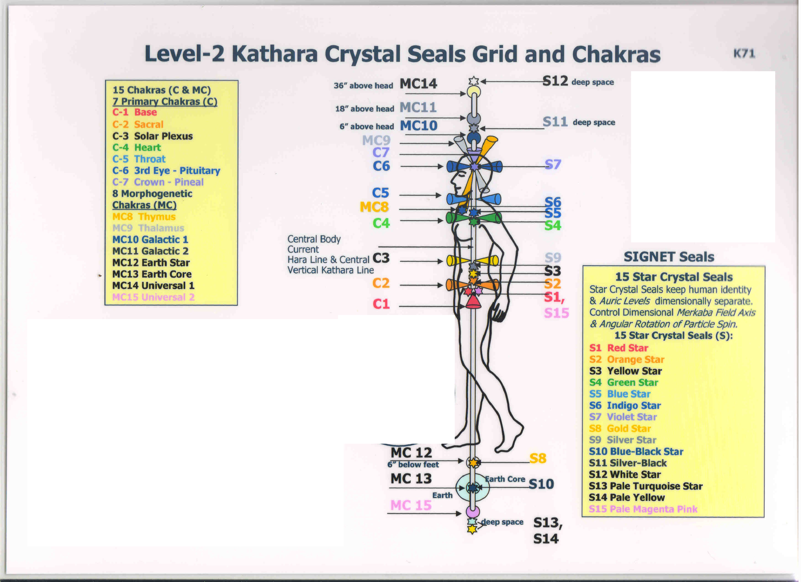
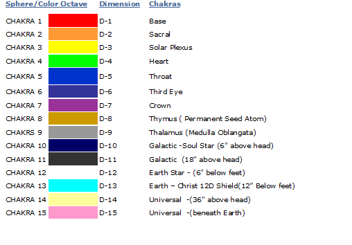

人体气场和轮脉系统
人体的气场(Aura),又称生物能量场(Bio-energy Field),是围绕身体的电磁场.关于它的知识是印度瑜伽学派和藏传佛教中修行的基础，现代科学也认为可以在人体周围探测到一个能量场的存在。主要作用是为身体挡去不合频率的外来电波，包括负能量、病气、辐射和浊气等等，是人类与生俱来的保护膜。
其实人的意识，本身可以看为一种电磁波，而人体气场，也就反应了人的意识状态。
如果我们有坚强而结实气场，对于我们来说，是不容易患有外部疾病或受到负面影响的。然而，如果我们的气场被削弱，我们就会变得更容易受到负面能量和疾病的伤害。就我们的心理、精神和情绪健康而言，我们气场的健康强壮是至关重要的。
人体气场是常人肉眼不可见的，然而通过Kirlian摄影技术，得以实现拍摄整个人体的“辉光”，就是围绕在生物体的电磁能量场的可视化展示。从照片中我们可以看到，这个能量场由不同的颜色构成，它们代表着不同的频率，构成了一幅识别我们的情感、思想及身体状况的蓝图。 由于现代科技的局限性，当前人体气场照仅能呈现出太阳光的可见光部分的色彩，其频率高低依次为 红，橙，黄，绿，蓝，靛，紫。它们正好对应瑜伽中提到的7个轮脉。 气场在一个健康的个体中，在身体周围呈椭圆形或蛋形。气场被认为在身体周围2.5-3米。
一个有趣的科学实验，如果我们用克里安照相技术对比冥想练习前后，便能发现人体气场颜色发生改变，这也就意味着，冥想的确能够改变人的意识状态。如果我们能够合理练习和应用，冥想将能够让我们的气场变得更加强大，更有能力去抵抗外部的负面影响并活出我们自己期待的生活，
人体气场照示例:


脉轮（Chakras)
这一词源于古印度梵语，意为能量中心。人体上的脉轮并非实质存在的器官，而是指全身气场的能量汇集点（也就是医学所讲的经络气穴）。如果将气场看为人体的自然生物盾，脉轮便如同这盾的开关，它们掌控着人们的情绪和意识状态，并和宇宙能量相连接。 每一个脉轮都有帮助将能量分配到肉体、情绪、心理和精神的不同功能，它们基本上是通过内分泌及脊柱神经系统与肉体的各种功能连结，并借由神经神经管道以及循环系统为中介使能量进出身体，调节内分泌及免疫系统，借由这种方式，使所有的器官、组织及细胞就得到了能量。
脉轮的能量跟所有宇宙的循环道理一样，有不足的也有过量的，如果脉轮产生阻塞、不足或过剩等状况，压力、忧郁、悲伤及愤怒等负面情绪便容易促成脉轮闸口关闭，长期累积将导致身体疾病的产生及精神失调。
由于能量属性特点，对此可以运用不同的色光来作补足与排解，在神秘学派中脉轮甚至有不同的专属频率或音符，这些音符会震动对应的脉轮，进而唤醒或开启它们。 通畅脉轮，能为健康服务，同时，还能开启智慧，提升精神，甚至到达天人合一的状态。
不过关于脉轮的数量具体的调理方法，不同神秘学派有不同的解释。当今人们最熟悉的是瑜珈学的书籍中，说人体有七个脉轮，它们可以从克里安照相中被观察到，也就是位于人体中心垂直的7个点，依次对应7色光。
除此之外，在这里我想介绍的是KS教学里面提到的15个脉轮系统。前7个与瑜伽中的7轮一致，而拓展出的脉轮伸延至地球核心与宇宙深处，从这里我们可以看出人体与地球以及宇宙是连为一体并相互影响的。而且这种脉轮系统，又与人体的Merkaba场密切相关

脉轮与对应光色 